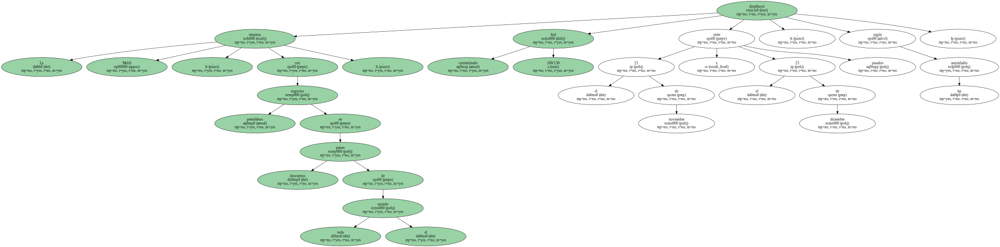
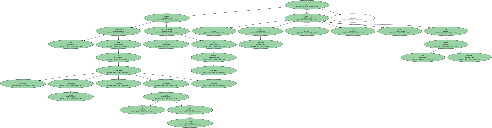
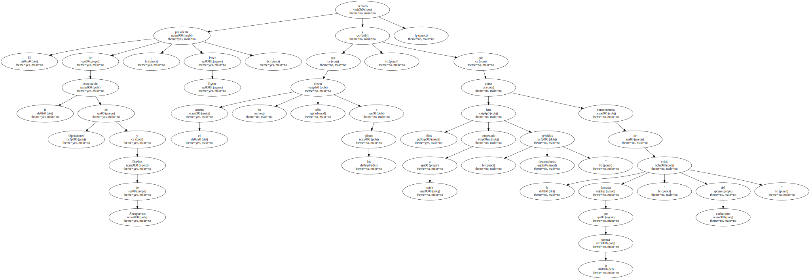
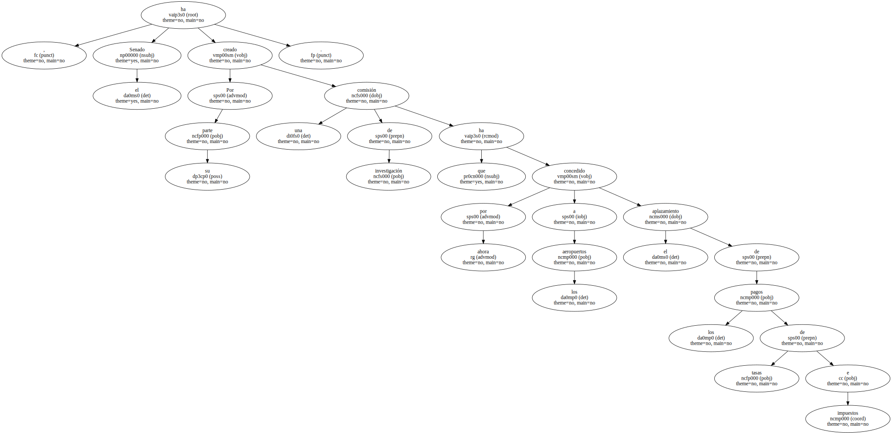
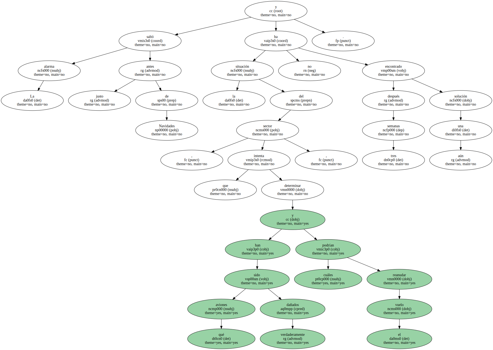
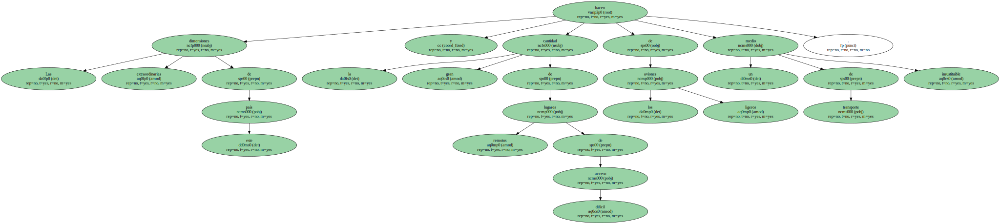
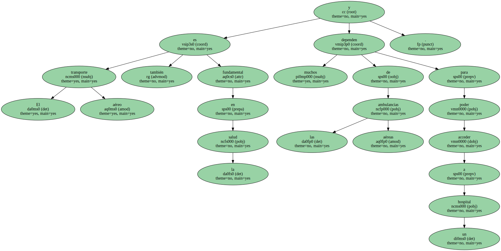
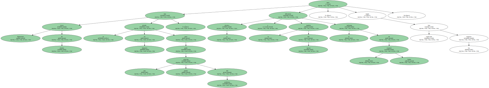
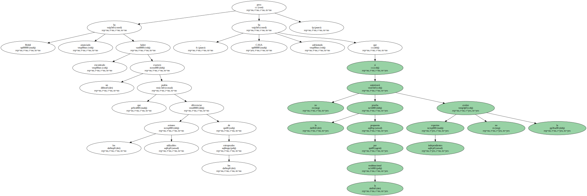
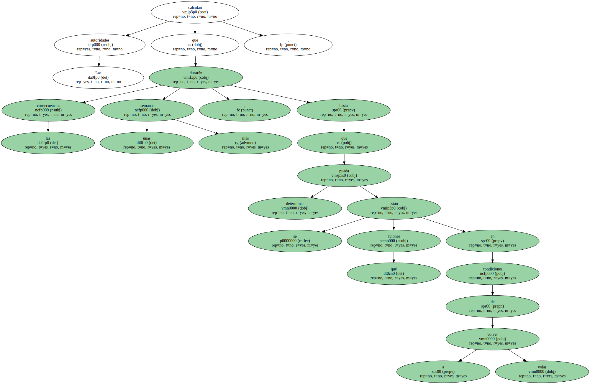

La mitad del parque de aviones ligeros de Australia tiene prohibido volar hasta nueva orden debido al carburante contaminado distribuido por la multinacional Mobil.
La empresa Mobil , con negocios petrolíferos en doscientos países de todo el mundo , distribuyó fuel contaminado 100/130 entre el 21 de noviembre y el 23 de diciembre pasados , según las autoridades.
El combustible salido de la refinería de Altona , en el estado de Victoria , dificulta el funcionamiento de los motores y , en ocasiones , llega a causar que dejen de funcionar.
El presidente de la Asociación de Operadores y Dueños de Aeropuertos , Peter Byrne , declaró que el asunto no sólo afecta a los pilotos , y que ellos han empezado a sufrir " pérdidas devastadoras " como consecuencia de la llamada por la prensa " crisis del carburante ".
Los socios de esa asociación han empezado a buscar consejo legal sobre una posible petición de compensación económica por las consecuencias sufridas tras adquirir el carburante de Mobil.

Por su parte , el Senado ha creado una comisión de investigación que por ahora ha concedido a los aeropuertos el aplazamiento de los pagos de tasas e impuestos.
La alarma saltó justo antes de Navidades y tres semanas después la situación del sector , que intenta determinar qué aviones han sido verdaderamente dañados y cuáles podrían reanudar el vuelo , no ha encontrado aún una solución.
Las extraordinarias dimensiones de este país y la gran cantidad de lugares remotos de difícil acceso hacen de los aviones ligeros un medio de transporte insustituible.
En varias localidades del noroeste de Australia y en las numerosas islas situadas a lo largo de la costa , tanto el correo como la prensa y los alimentos se distribuyen por avión.

El transporte aéreo también es fundamental en la salud y muchos dependen de las ambulancias aéreas para poder acceder a un hospital.
Un comandante del Ejército del Aire , John Oddie , declaró que diez aviones más que volaban en Queensland han sido obligados a quedarse en tierra y se les ha sometido a un riguroso examen , pero deberán esperar a que la Autoridad para la Seguridad de la Aviación Civil ( CASA , siglas en inglés ) determine que sus condiciones son óptimas para volver a operar.
Numerosas voces de alarma se han alzado en Australia para pedir una pronta solución del problema , pero la técnica y lo insólito del suceso dificultan el hallazgo de un examen fiable , según han explicado los expertos.
Mobil ha anunciado haber encontrado un examen que podría diferenciar los aviones utilizables de los estropeados , pero CASA ha adelantado que no autorizará la prueba propuesta por la multinacional si expertos independientes no la avalan.
El director de CASA , Mick Toller , informó de que estaban a la espera de que lleguen especialistas de Europa y Estados Unidos para determinar la fiabilidad del examen presentado por Mobil.
Las autoridades calculan que las consecuencias durarán unas semanas más , hasta que se pueda determinar qué aviones están en condiciones de volver a volar.
Mientras tanto , los efectos de la crisis empiezan a extenderse fuera del país al descubrirse problemas derivados de este carburante contaminado en uno de los aviones de las Fuerzas Aéreas Reales de Australia que operaba en las tareas de mantenimiento de la paz en Timor Oriental.